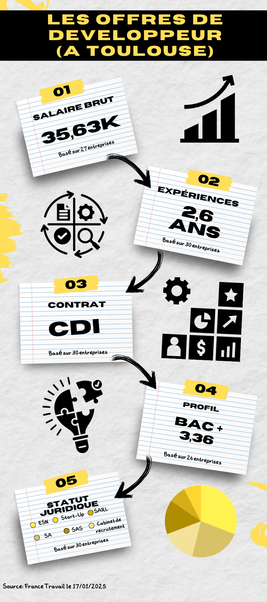

Partie 1 : Continuer à se former après le BUT
| Ecole (en Alternance) | Ville | Spécialité | Débouchés | Attendus | Critères | Pourquoi moi ? | Procédures d'inscription | Prix | Taux d'emploi (à 6 mois) | lien |
|---|---|---|---|---|---|---|---|---|---|---|
| ULCO | Calais | Ingénierie du logiciel Libre (Gestion Projet / Web) | Développeur d’applications multi-tiers et web Concepteur de systèmes multi-tiers Architecte logiciel Responsable d’infrastructures informatiques (systèmes et réseau) Développeur/concepteur de solutions embarquées Chef de projet (plus spécifiquement les projets de migration vers le libre) Chef de projet agile | Programmation objet Programmation fonctionnelle Méthodologies de développement Développement web Bases de données Théorie des langages Réseaux Administration des systèmes Intelligence artificielle (IA) Analyse numérique Systèmes linéaires Probabilités et statistiques Niveau avancé en anglais | Projet professionnel Expériences Motivation Résultats | Appuyer sur mon alternance avec lettre de recommandation du tuteur, Famille sur Calais, projet à l'IUT | Dossier + entretien | 243 | 0.87 | https://www.monmaster.gouv.fr/master/universite-du-littoral/informatique-22?q=Informatique&modality=Alternance%20-%20Apprentissage&position=3&layout=1 |
| UT | Toulouse | SDL Science du logiciel (Gestion de projet / web) | Activités informatiques (génie logiciel, exploitation, maintenance, sécurité) | Programmation Java avancée (généricité, exceptions, bibliothèque de collections). Modélisation/conception objet. Méthodes de développement. Bases théoriques (algèbre, logique, automates, théorie des langages, modèles de programmation, vérification, complexité). | Les notes obtenues sur les trois années de Licence Pertinence du projet de formation détaillé dans la lettre de motivation Les expériences passées : projets, stages Des lettres de recommandations éventuelles | Alternance, Java, déjà de l'expérience en architecture micro-services | Dossier | 243 | 0.63 | https://www.monmaster.gouv.fr/master/universite-toulouse-iii/informatique-24?q=Informatique&modality=Alternance%20-%20Apprentissage&position=11&layout=1 |
| ULH | Le Havre | Ingénierie du WEB (Web / IA) | Architecte WEB, Architecte de données Informatiques, Architecte système et réseaux, Chef de projet internet, Data scientist, Ingénieur d’étude, ingénieur de développement, Chef de projet informatique, architecte informatique répartie, | Licence informatique générale fortement conseillée Maîtriser le langage de programmation Java Maîtriser les fondamentaux des bases de données Maîtriser les fondamentaux du WEB Maîtriser les fondamentaux de la théorie des langages Maîtriser les fondamentaux du système d’exploitation Linux Avoir un projet professionnel en adéquation avec l'offre de formation du Master Avoir un niveau correct en anglais | les mentions de licence conseillées la maîtrise de certains savoirs ou certaines compétences les notes obtenues dans les années précédentes | IUT du Havre, Alternance en Web, assisté à la présentation, possibilité de continuer avec eux | Dossier | 243 | 0.647 | https://www.monmaster.gouv.fr/master/universite-du-havre/informatique-36?q=Informatique&modality=Alternance%20-%20Apprentissage&address%5B0%5D%5B0%5D=normandie&position=0&layout=1 |
Partie 2 : Le marché de l’emploi ouvert à Toulouse
